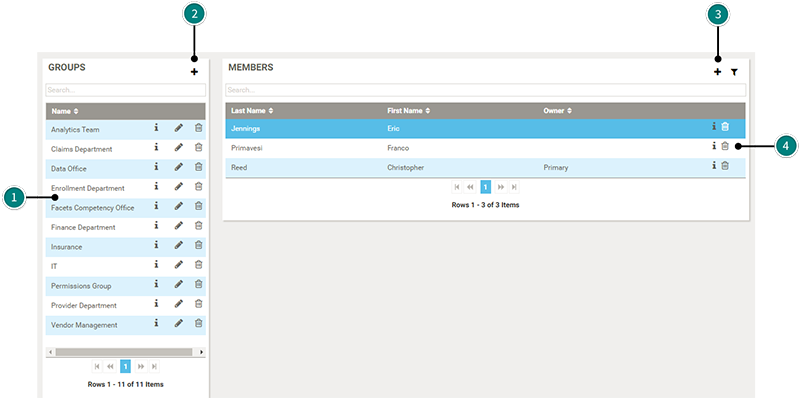
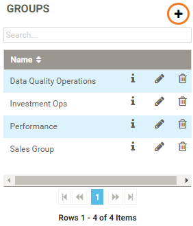

Tip: You must have administrator permissions to manage users and groups.
Groups allow you to cluster users together into logical categories, such as departments, or functional areas within an organization. For example, Human Resources and Finance, or Data Governance and Data Quality Operations.
To view or edit an existing group, or add a new group, select Groups from the Administration menu on the left of the screen.

The Groups panel shows a list of existing groups. Select a group from the list to see details of the group members.
Click the pencil icon to edit the group, or click the delete icon to remove the group from the system.
Click the Add button to add a new group. See Creating a new group.
Once you have created and saved a group, you can assign members from the Members panel. See Adding members to a group.
You can remove a member from a group by clicking the delete icon to the right of the user that you want to remove. See Removing a member from a group.

When you have finished creating a new group, you can assign members to the group.
See also Managing users.